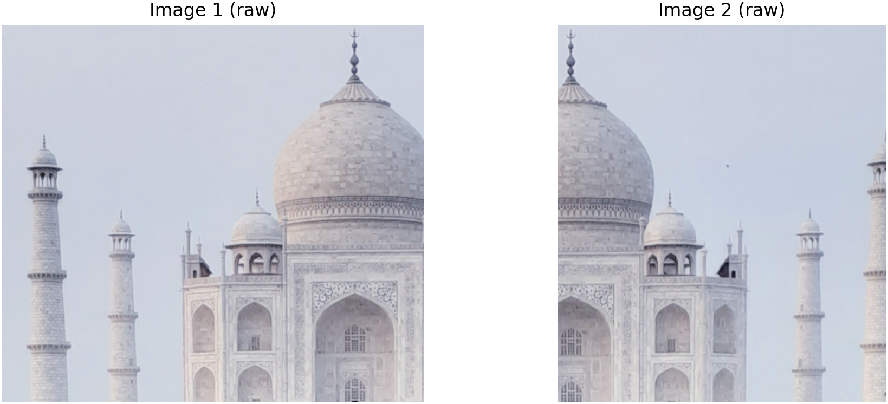
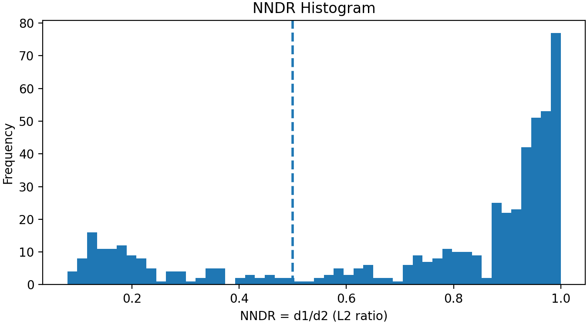
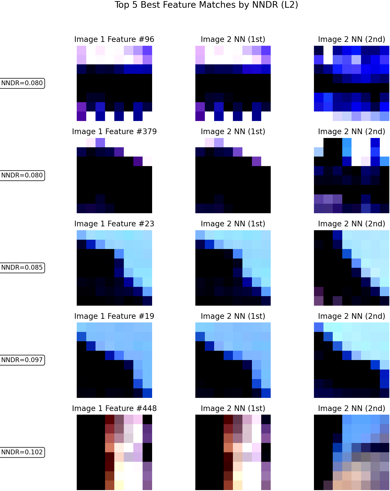
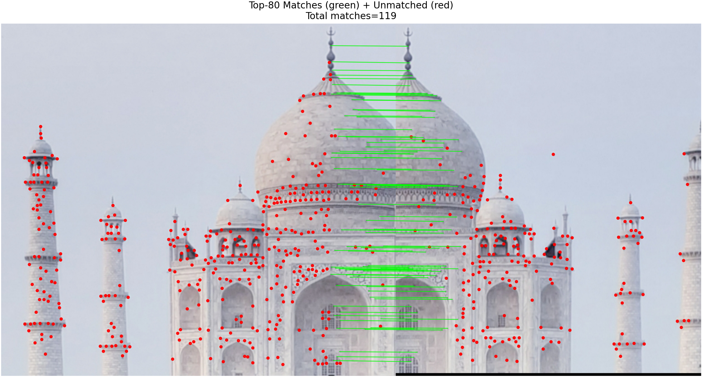
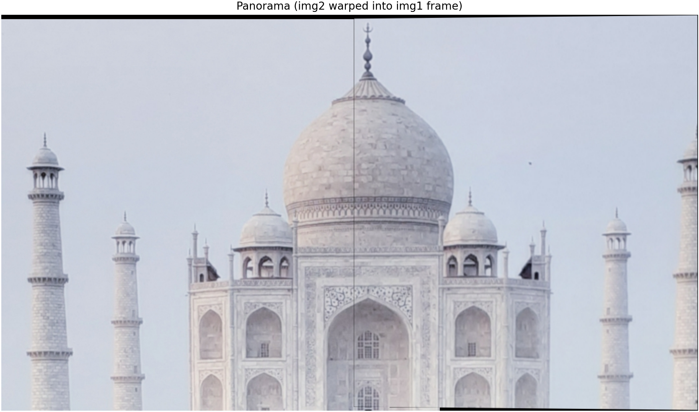
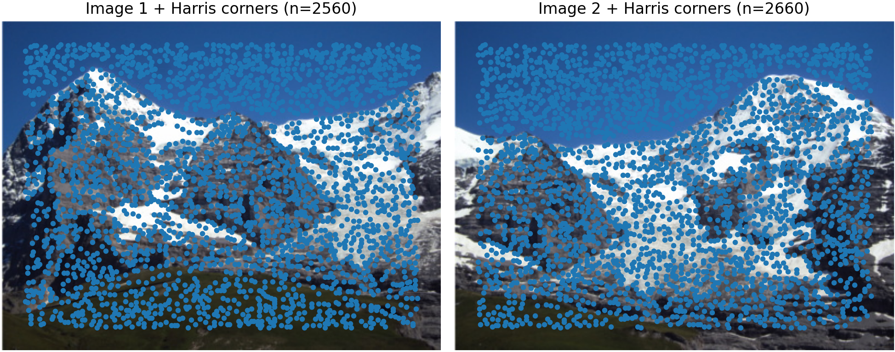
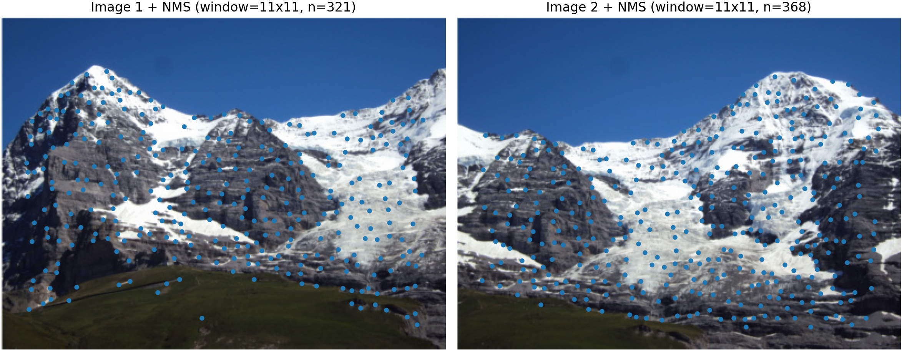
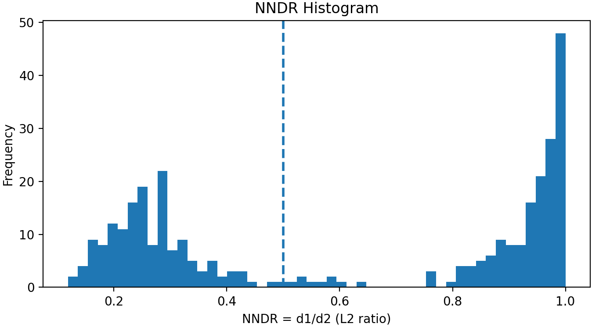
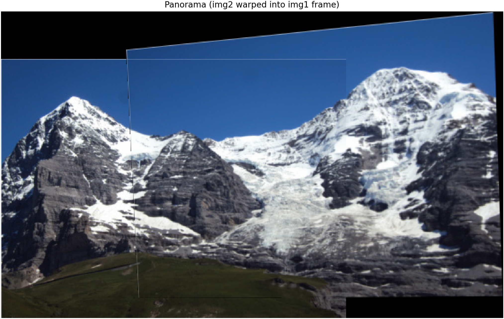

Dataset — Taj Mahal
Results for the Taj Mahal image pair: Harris corners, NMS filtering,
NNDR analysis, matches visualization, and panorama stitching.
Step 1 — Raw Images

1_taj_mahal_raw.png
outputs/1_taj_mahal_raw.png
Step 2 — Harris Corners
 2_taj_mahal_harris_corners.png
outputs/2_taj_mahal_harris_corners.png
2_taj_mahal_harris_corners.png
outputs/2_taj_mahal_harris_corners.png
Step 3 — Harris Corners + NMS
 3_taj_mahal_harris_corners_nms.png
outputs/3_taj_mahal_harris_corners_nms.png
3_taj_mahal_harris_corners_nms.png
outputs/3_taj_mahal_harris_corners_nms.png
Step 4 — NNDR Histogram

4_taj_mahal_nndr_histogram.png
outputs/4_taj_mahal_nndr_histogram.png
Step 5 — Best Features by NNDR

5_taj_mahal_best_features_by_nndr.png
outputs/5_taj_mahal_best_features_by_nndr.png
Step 6 — Matches

6_taj_mahal_matches.png
outputs/6_taj_mahal_matches.png
Panorama

2_taj_mahal_panorama.png
outputs/2_taj_mahal_panorama.png
Dataset — Hill
Results for the Hill image pair: Harris corners, NMS filtering, NNDR
analysis, matches visualization, and panorama stitching.
Step 1 — Raw Images
 1_hill_raw.png
outputs/1_hill_raw.png
1_hill_raw.png
outputs/1_hill_raw.png
Step 2 — Harris Corners

2_hill_harris_corners.png
outputs/2_hill_harris_corners.png
Step 3 — Harris Corners + NMS

3_hill_harris_corners_nms.png
outputs/3_hill_harris_corners_nms.png
Step 4 — NNDR Histogram

4_hill_nndr_histogram.png
outputs/4_hill_nndr_histogram.png
Step 5 — Best Features by NNDR
 5_hill_best_features_by_nndr.png
outputs/5_hill_best_features_by_nndr.png
5_hill_best_features_by_nndr.png
outputs/5_hill_best_features_by_nndr.png
Step 6 — Matches
 6_hill_matches.png
outputs/6_hill_matches.png
6_hill_matches.png
outputs/6_hill_matches.png
Panorama

2_hill_panorama.png
outputs/2_hill_panorama.png